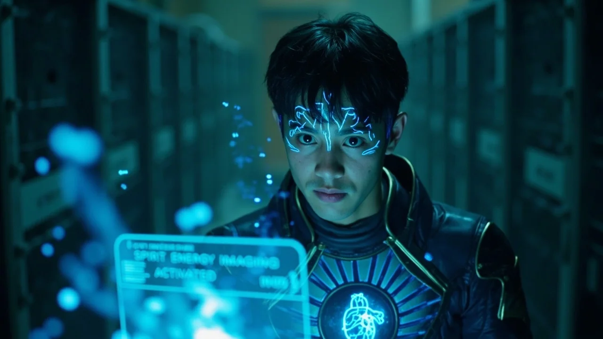
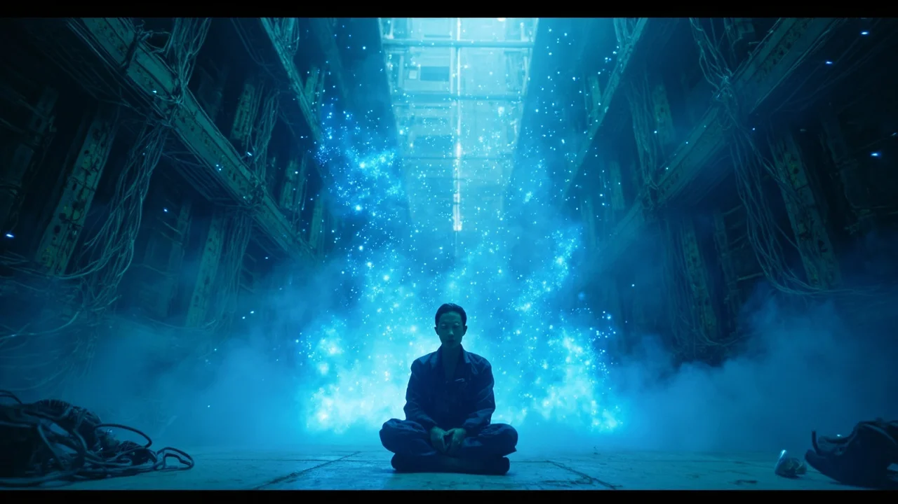
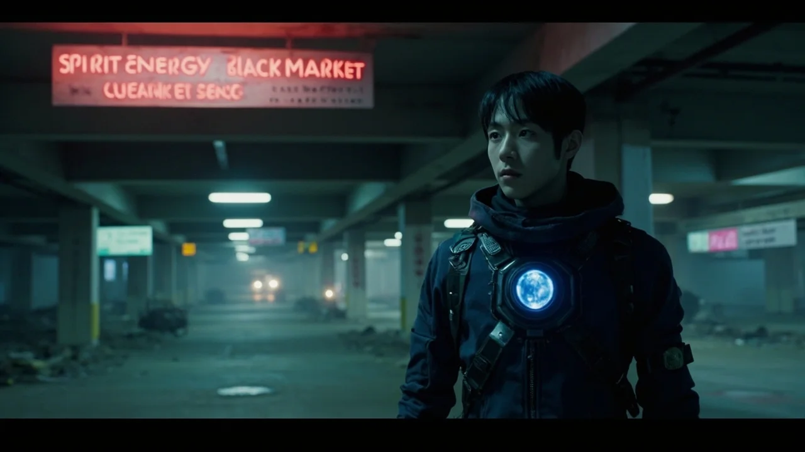

>
>
跳到主要內容
← 文字版
第57章
第59章
📚 目錄
第58章：黑市探險
🎧 點擊播放有聲朗讀
▶
播放有聲朗讀
場景一
逃脫與蛻變
林塵躺在陰暗的通風井中，心跳漸漸平復。靈芯界面上跳動著一行綠字：「逃逸成功，獎勵積分已發放。」他低下頭看向自己的雙手，仍在微微發抖，但卻感覺到一股前所未有的力量在血液中流淌。那枚小小的量子晶片，正悄然改變著他的命運。

場景二
靈氣成像
靈芯系統的聲音再次響起：「檢測到宿主已成功吸納首批靈氣，系統功能解鎖：靈氣成像。」林塵好奇地點開選項，頓時，周圍的環境在他的視線中變得不同了。只見空氣中漂浮著淡淡的藍色光點，密集程度各異——這就是師兄們口中提到的「靈氣濃度」！

場景三
靈氣寶庫
一間巨大的機房中，堆滿了古老的服務器與數據線路。而在這些設備的縫隙中，無數藍色的靈氣光點如同螢火蟲般飄動著，幾乎凝聚成了一片霧氣。「這裡的靈氣濃度……起碼是外界的百倍！」林塵難以置信地睜大眼睛。根據他的記憶，那裡是靈氣黑市最大的靈氣交易點，也是最危險的區域之一。
場景四
靈識誕生
林塵按照靈芯的指引，開始引導周圍的靈氣。藍色靈氣霧氣開始緩緩流動，漸漸向林塵的身體匯聚而來。一分鐘、兩分鐘、十分鐘……他能感覺到，有什麼東西正在體內慢慢成形——那是一種玄而又玄的感知能力，彷彿能「看」到周圍的空間。「恭喜宿主，靈識已初步誕生。境界提升：練氣期二層。」

場景五
黑市之路
林塵長長吐出一口濁氣，感受著體內澎湃的力量，嘴角露出了一絲微笑。「破序者……你們給我等著。總有一天，我會把你們踩在腳下。」他站起身，目光堅定地看向遠方。外麵，鉛雲密布的天空仍是那麼壓抑，但林塵的心，卻前所未有的明亮。一座巨大的廢棄地下停車場出現在他面前——靈氣黑市的大門，已經敞開。